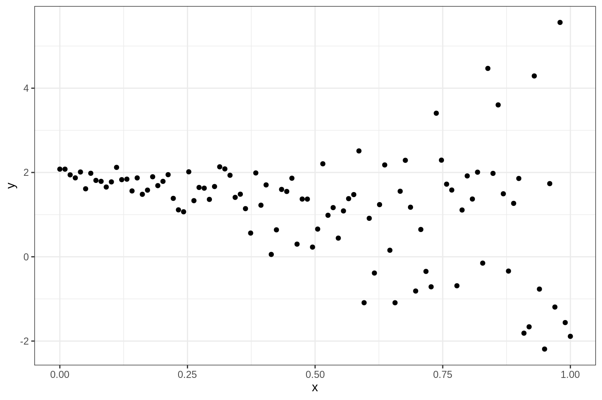
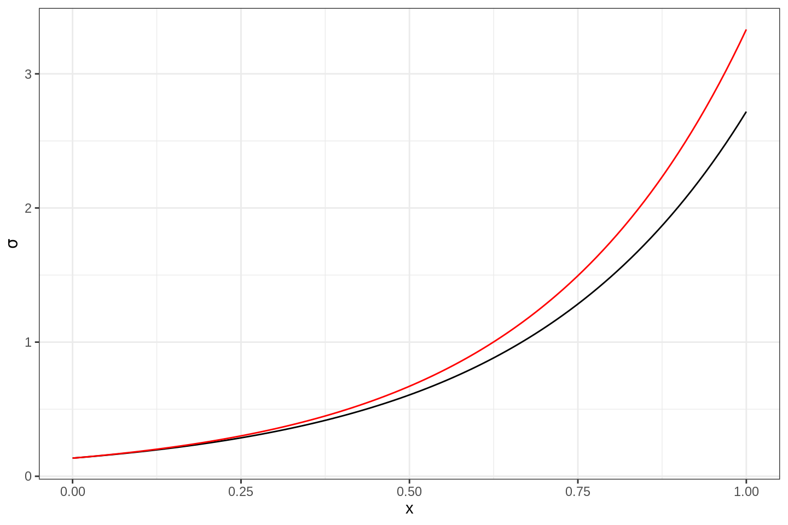
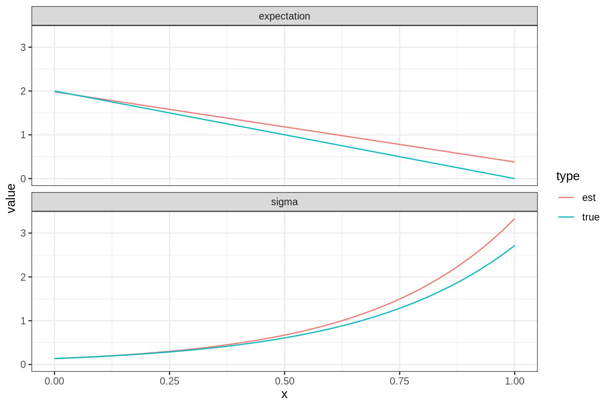

In this lab session you will explore optimisation methods, and practice writing R functions that can be supplied to the standard optimisation routine in R, in order to perform numerical parameter estimation. You will not hand in anything, but you should keep your code script file for later use.
Note: This lab sheet contains supplementary course notes about optimisation and the R language.
If you’re working on rstudio.cloud, first click on your name in the top right corner and go to Authentication. Activate github access, including “Private repo access also enabled”. You should be redirected to authenticate yourself with github. (Without this step, creating a new project from a github repository becomes more complicated.)
If you’re working on a local computer, Sections 9-12 of happygitwithr.com has useful information for setting up the system; Section 10 discusses how to configure the system so that it can remember your github access details. This should normally only be needed once, and should not need to be setup again for new projects. The procedure is similar to the setup described below that is needed for rstudio.cloud Projects, but for local computer setup it can be done globally for all R projects.
After setting up the initial github authentication, follow these steps:
lab02-username where “username” is your github username.Statistical Computing workspace.lab02_code.R, and use it to hold the code for this lab. During the lab, remember to save the script file regularly, to avoid losing any work. You will also use git to synchronise the file contents with the github repository.Note 1: If you’re running on a local RStudio installation, steps 4 and 5 above should be replaced by first opening RStudio, and then choosing “File->New repository->Version control->Git”
Note 2: If you’re on rstudio.cloud, the StatCompLab package will already be installed. Otherwise, run remotes::install_github("finnlindgren/StatCompLab/", build_vignettes = TRUE)
The remotes::install_github syntax means that R will use the function install_github from the package remotes, without having to load all the functions into the global environment, as would be done with library("remotes"). In some cases, R/RStudio will detect that some related packages have newer versions, and ask if you want it to first upgrade those packages; it is generally safe to accept such upgrades from the CRAN repository, but from other sources, including github, you can decline such updates unless you know that you need a development version of a package.
In addition to the lab and tutorial documents, the StatCompLab package includes a graphical interactive tool for exploring optimisation methods, based on the R interactive shiny system.
A version control repository is a place where files under the control of git are kept and kept track of over time.
After cloning the repository to rstudio.cloud, you need to setup authentication within the project (the same method can be used when initially setting up authentication on your own computer, but there you have more options, such as SSH public key authentication, see happygitwithr.com):
Console pane, run credentials::set_github_pat() to add the new tokenTerminal pane, rungit config --global credential.helper "cache --timeout=10000000"which sets a cache timeout of a bit over 16 weeks before it should need you to authenticate in this project again.
You will need to go through this procedure for each rstudio.cloud git project you create in the future. (If you store the PAT in a safe place you can reuse it for all the projects, but it’s safer to only use it once, and delete the copy after running set_github_pat())
Use credentials::credential_helper_get(), ..._list() and ..._set() to control what method is used to store the authentication information. On your own computer, you can set it to a method (usually called “store”) that stores the information permanently instead of just caching it for a limited time.
The basic git operations, clone, add, commit, push, and pull
rstudio.cloud or your local machine is to create a clone; Initially, the cloned repository is identical to the original, but local changes can be made.add and commit: When changes to one or several files are “done”, we need to tell git to collect the changes and store them. With git, one needs to first tell it which file changes to add (called staging in git), and then to commit the changes.push: When we’re happy with our local changes and want to make them available either to ourselves on a different computer, or to others with access to the github copy of the repository, we push the commits. On rstudio.cloud, unless you setup authentication as described on happygitwithr.com, you will need to enter your github username and password.pull: To get access to changes made in the github repository, we can pull the commits that were made there since the last time we either cloned or pulled.Task:
lab02_code.R file and add a line containing library(StatCompLab)
Git pane, press Commit and select the changed file (a tick mark should appear indicating the file as being Staged, and the display also shows what has changed; this can also be done before pressing Commit)lab02_code.R there to see that your change has been includedThe optimisation methods discussed in the lecture (Gradient Descent, Newton and the Quasi-Newton method BFGS, see Lecture 2) are all based on starting from a current best estimate of a minimum, finding a search direction, and then performing a line search to find a new, better, estimate. The Nelder-Mead Simplex method works in a similar way, but doesn’t use any derivatives of the target function; it only uses function evaluations, and keeps track of a set of local points (\(m+1\) points, if \(m\) is the dimension of the problem). For 2D problems the method updates a triangle of points. In each iteration, it attempts to move away from the “worst” point, by performing a simple line search. In addition to the basis line search, it will reduce or expand the triangle. Expansion happens similarly to the adaptive step length in the Gradient Descent method.
Start the optimisation shiny app:
StatCompLab::optimisation()Hint: find the “Evaluations:” information in the app. You may need to use the “Converge” button multiple times, since it will only do at most 500 iterations each time.
Also note the total number of iterations needed by each method. How do they compare?
Answer: \(m=2\), so the number of function evaluations is given by #f + 2 * #gradient + 8 * #hessian (2 extra function evaluations are needed for first order differences for the gradient, and 8 extra points are needed for the second order differences needed for the second order derivatives; we’ll revisit this in week 9)
BFGS uses the smallest number of function evaluations, which makes it faster than the more “exact” Newton method, despite needing almost twice as many iterations. Thus, we would normally only consider using the full Newton method if we have a more efficient way of obtaining the Hessian than finite differences. Gradient Descent does extremely badly on this test problem; clearly, using some approximate information about the second order derivatives can provide much better search directions and step lengths than using no higher order information. The Simplex method doesn’t use higher order information, but due to its local “memory” it can still be competetive; in this test case, it outperforms the Newton method in terms of cost, but not the BFGS method.
A function in R can have a name, arguments (parameters), and a return value. A function is defined through
thename <- function(arguments) {
expressions
}where expressions is one or more lines of code. The result of the last evaluated expression in the function is the value returned to the caller.
Each input parameter can have a default value, so that the caller doesn’t have to specify it unless they want a different value. Sometimes, a NULL default value is used, and the parameter checked internally with is.null(parameter) to determine if the user supplied something.
It is good practice to refer to the parameters by name when calling a function (instead of relying on the order of the parameters; the first parameter is a common exception to this practice), especially for parameters that have default values. Example:
my_function <- function(param1, param2 = NULL, param3 = 4) {
# 'if': run a block of code if a logical statement is true
if (is.null(param2)) {
param1 + param3
} else {
# 'else', companion to 'if':
# run this other code if the logical statement wasn't true
param1 + param2 / param3
}
}
my_function(1)
#> [1] 5
my_function(1, param3 = 2)
#> [1] 3
my_function(1, param2 = 8, param3 = 2)
#> [1] 5
my_function(1, param2 = 8)
#> [1] 3The main optimisation function in R is optim(), which has the following call syntax:
optim(par, fn, gr = NULL, ...,
method = c("Nelder-Mead", "BFGS", "CG", "L-BFGS-B", "SANN",
"Brent"),
lower = -Inf, upper = Inf,
control = list(), hessian = FALSE)Here, the method parameter appears to have a whole vector as its default value. However, this is merely a way to show the user all the permitted values. If the user does not supply anything specific, the first value, "Nelder-Mead" will be used.
You may have briefly encountered the special ... parameter syntax in an earlier lab. It means that there may be additional parameters specified here by the caller, that should be passed on to another function that is called internally. For optim(), those extra parameters are passed on to the target function that the user supplies. A call to optim() to minimise the function defined by myTargetFunction() might take this form:
opt <- optim(par = start_par,
fn = myTargetFunction,
extra1 = value1,
extra2 = value2)When optim() uses the function myTargetFunction(), it will be called like this:
myTargetFunction(current_par, extra1 = value1, extra2 = value2)As an example, we’ll look at a model for the connection between some values \((x_1,\dots,x_n)\) and observations \(y_i\) (see Lecture~2) that can be written
\[ \begin{aligned} i &\in \{1, 2, \dots, n\} \\ x_i &= \frac{i-1}{n-1} \\ \boldsymbol{X} &= \begin{bmatrix}\boldsymbol{1} & \boldsymbol{x}\end{bmatrix} \\ \boldsymbol{\mu} &= \boldsymbol{X} \begin{bmatrix}\theta_1 \\ \theta_2\end{bmatrix} \\ \log(\sigma_i) &= \theta_3 + x_i \theta_4 \\ y_i &= \mathsf{N}(\mu_i, \sigma_i^2), \quad\text{(independent)} . \end{aligned} \] Use the following code to simulate synthetic random data from this model, where both the mean and standard deviation of each observation depends on two model parameters via a common set of covariates.
n <- 100
theta_true <- c(2, -2, -2, 3)
X <- cbind(1, seq(0, 1, length.out = n))
y <- rnorm(n = n,
mean = X %*% theta_true[1:2],
sd = exp(X %*% theta_true[3:4]))Plot the data.
library(ggplot2)
theme_set(theme_bw())
ggplot(data.frame(x = X[, 2], y = y)) +
geom_point(aes(x, y))
Write a function neg_log_lik <- function(theta, y, X) {(Code goes here)} that evalues the negative log-likelihood for the model. See ?dnorm.
neg_log_lik <- function(theta, y, X) {
-sum(dnorm(x = y,
mean = X %*% theta[1:2],
sd = exp(X %*% theta[3:4]),
log = TRUE))
}With the aid of the help text for optim(), find the maximum likelihood parameter estimates for our statistical model using the BFGS method with numerical derivatives. Use \((0,0,0,0)\) as the starting point for the optimisation.
Check the ?optim help text for information about what the result object contains. Did the optimisation converge?
Answer: The optimisation converged if opt$convergence is 0. Or at least optim() thinks it coverged, since it triggered it’s convergence tolerances.
Compute and store the estimated expectations and \(\sigma\) values like this:
data <- data.frame(x = X[, 2],
y = y,
expectation_true = X %*% theta_true[1:2],
sigma_true = exp(X %*% theta_true[3:4]),
expectation_est = X %*% opt$par[1:2],
sigma_est = exp(X %*% opt$par[3:4]))The estimates of \(\sigma_i\) as a function of \(x_i\) should look similar to this:
ggplot(data) +
geom_line(aes(x, sigma_true)) +
geom_line(aes(x, sigma_est), col = "red") +
xlab("x") +
ylab(expression(sigma))
The expression(sigma) y-axis label is a way of making R try to interpret an R expression and format it more like a mathematical expression, with greek letters, etc. For example, ylab(expression(theta[3] + x[i] * theta[4])) would be formatted as \(\theta_3+x_i\theta_4\).
To help produce proper figure labels, we can use data wrangling methods from a set of R packages commonly referred to as the tidyverse. The idea is to convert our data frame that has each type of output as separate data columns into a format where the values of the true and estimated expectations and standard deviations are stored in a single column, and other, new columns encode what each row contains.
suppressPackageStartupMessages(library(tidyverse))
data_long <-
data %>%
pivot_longer(cols = -c(x, y),
values_to = "value",
names_to = c("property", "type"),
names_pattern = "(.*)_(.*)")
data_long
#> # A tibble: 400 x 5
#> x y property type value
#> <dbl> <dbl> <chr> <chr> <dbl>
#> 1 0 2.08 expectation true 2
#> 2 0 2.08 sigma true 0.135
#> 3 0 2.08 expectation est 1.98
#> 4 0 2.08 sigma est 0.135
#> 5 0.0101 2.08 expectation true 1.98
#> 6 0.0101 2.08 sigma true 0.139
#> 7 0.0101 2.08 expectation est 1.97
#> 8 0.0101 2.08 sigma est 0.140
#> 9 0.0202 1.94 expectation true 1.96
#> 10 0.0202 1.94 sigma true 0.144
#> # … with 390 more rowsHere, we collected all the true and estimated expectations and standard deviations into a single column value, and introduced new columns property and type, containing strings (characters) indicating “expectation”/“sigma” and “est”/“true”. Take a look at the original and new data and data_long objects to see how they differ.
We can now plot all the results with a single ggplot call:
 The function facet_wrap splits the plot in two parts; one based on the data for all data_long rows where property is “expectation”, and one based on the data for all data_long rows where property is “sigma”. The colour is chosed based on type, as shown in a common legend for the whole plot.
hessian = TRUE, to obtain a numeric approximation to the Hessian of the target function at the optimum, and compute its inverse (see ?solve), which is an estimate of the covariance matrix for the error of the parameter estimates. In a future Computer Lab we will use this to evaluate approximate confidence and prediction intervals.
opt <- optim(par = c(0, 0, 0, 0),
fn = neg_log_lik, y = y, X = X,
method = "BFGS",
hessian = TRUE)
covar <- solve(opt$hessian)
covar
#> [,1] [,2] [,3] [,4]
#> [1,] 0.0022827772 -0.007597505 -0.0004132743 0.0008264823
#> [2,] -0.0075975049 0.050828380 0.0027647341 -0.0055289285
#> [3,] -0.0004132743 0.002764734 0.0231597168 -0.0363194612
#> [4,] 0.0008264823 -0.005528929 -0.0363194612 0.0726389957